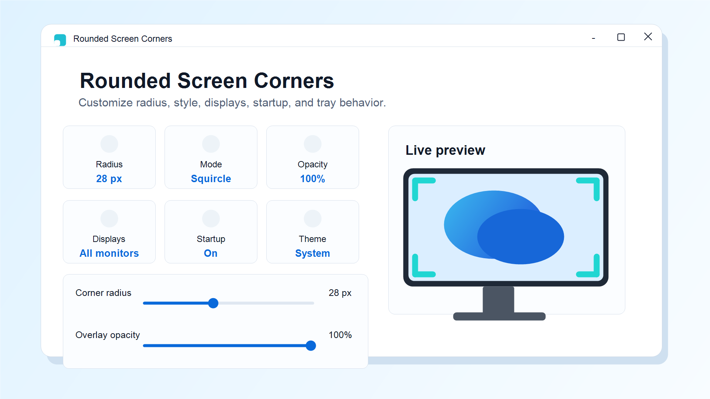
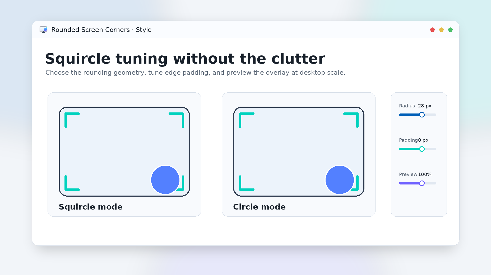
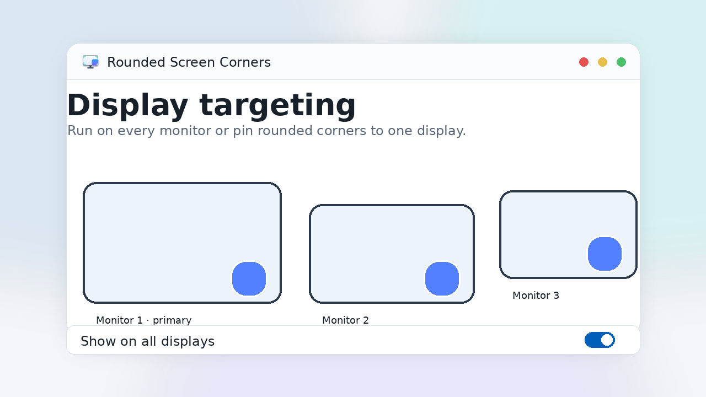
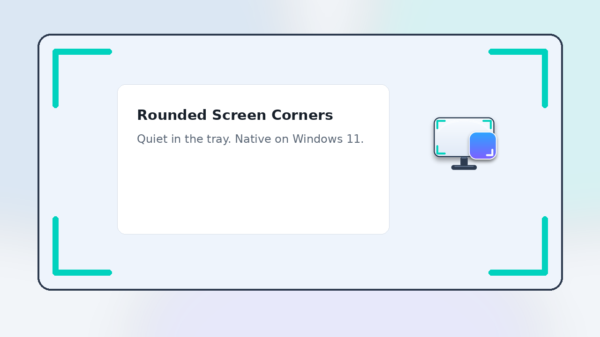

Beautiful rounded
corners for Windows.
A lightweight WinUI 3 utility that adds customizable corner overlays to your displays, with squircle styling, multi-monitor support, and a quiet system-tray workflow.
What it does
A small utility for the visual details you notice all day.
Rounded screen overlays
Add soft, customizable overlays to the physical corners of your display for a Windows 11-style finish.
Circle or squircle
Switch between classic circular rounding and smoother squircle geometry, then tune radius and opacity.
Per-corner control
Enable exactly the corners you want, adjust edge padding, and preview the result before you tuck it away.
Multi-monitor support
Run on all displays or target one specific monitor, with display detection handled by the app.
Lives in the tray
Open settings from the tray, hide the tray icon if you prefer, and optionally launch minimized at sign-in.
Private by design
No network calls, no analytics, no account. Settings and crash logs stay in your local app data folder.
See it in action
Native Fluent Design, ready for the Store listing.




Two ways to install
Same app, same features. Pick the channel that fits.
Microsoft Store
One-click install with automatic background updates. A small one-time purchase that supports ongoing development.
Get on Microsoft StoreGitHub release
Fully featured, completely free, sideloaded as a signed .msixbundle. Updates are manual.
Frequently asked questions
The short answers to the most common questions.
Does it work on Windows 10?
Yes. Rounded Screen Corners supports Windows 10 build 17763 or newer and Windows 11. Packaged builds bundle the Windows App SDK runtime.
Does it support multiple monitors?
Yes. You can show overlays across all displays or choose a specific monitor from the settings page.
Can I choose the corner style?
Yes. Choose circle or squircle rounding, tune the radius and opacity, adjust edge padding, and enable only the corners you want.
What happens at startup?
The app can register a packaged StartupTask and launch minimized at sign-in, so the overlays are available without opening the settings window.
What permissions does it need?
The app runs with standard user permissions and makes no network requests. The GitHub sideload installer asks for administrator access once to trust its signing certificate; the Microsoft Store install does not. Packaged launch at sign-in can be disabled in the app or Windows Startup apps.
Why is it on the Microsoft Store too?
The GitHub version stays free and open source. The Store channel adds one-click install and automatic updates for people who prefer that workflow, with no paywalled or gated features between channels.
Privacy by default
Rounded Screen Corners makes no network calls and collects no telemetry. Your settings and crash logs stay on your machine. Read the privacy policy